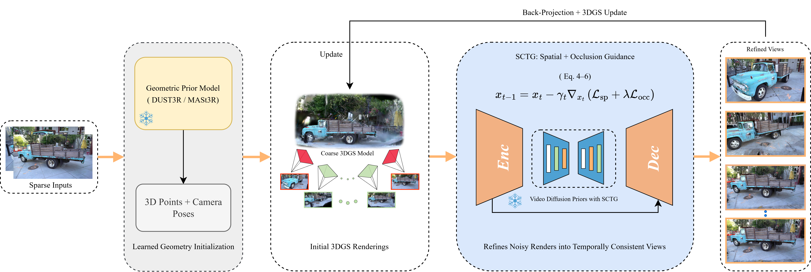
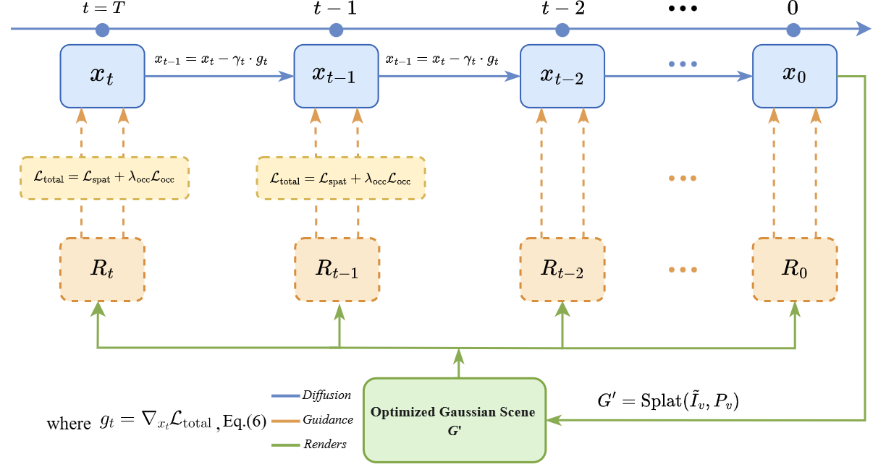
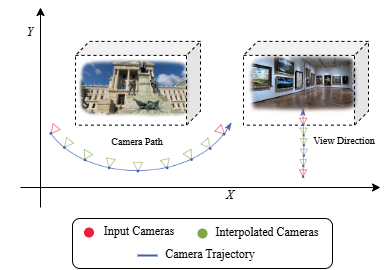
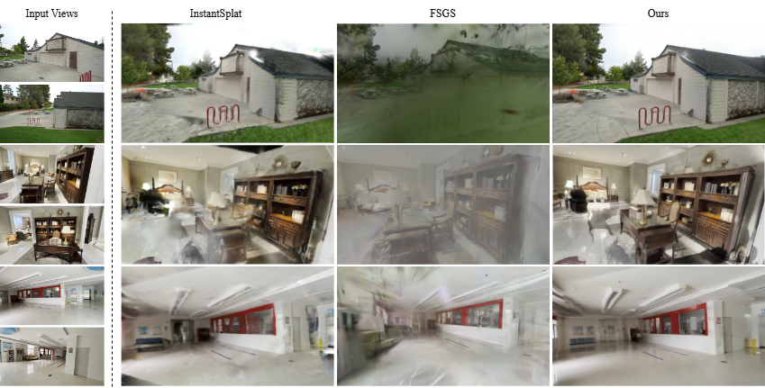

Reconstructing complete 3D scenes from extremely sparse viewpoints (e.g., 2–3 wide-baseline images) remains a core yet unsolved challenge. Existing 3D Gaussian Splatting (3DGS) and neural rendering methods degrade severely when view overlap is limited, often producing incomplete or geometrically distorted results. We introduce SplatFusion, a reconstruction framework that requires no training or fine-tuning of diffusion models, instead relying solely on pretrained video diffusion priors to synthesize missing scene content plausibly. Our core idea is a Scene-Consistent Temporal Guidance (SCTG) mechanism that tightly couples 3D structure with generative diffusion models. SCTG conditions video diffusion on sequences rendered from the evolving 3DGS representation, enforcing both spatial alignment with geometry and temporal coherence across synthesized frames. These refined views are back-projected to densify and correct the 3D scene iteratively. Extensive experiments on diverse real-world datasets demonstrate that SplatFusion consistently outperforms existing sparse-view reconstruction methods across perceptual quality and geometric consistency metrics.
Keywords
Key Contributions
First training-free method for extreme sparse-view 3D reconstruction from 2–3 wide-baseline images.
Novel SCTG mechanism enforcing spatial and temporal consistency via 3DGS-conditioned diffusion guidance.
3D-aware visibility-masked guidance loss enabling robust structural densification in unobserved regions.
State-of-the-art results on Tanks & Temples, MipNeRF360, and DL3DV-10K benchmarks.



We compare SplatFusion against InstantSplat, FSGS, SD-Inpainting, CF-3DGS, and DNGaussian under extreme sparse-view conditions (2–3 wide-baseline images). Our method consistently preserves geometry, fine details, and temporal coherence where baselines exhibit artifacts.

SplatFusion excels particularly under wide-baseline conditions (30°–60° separation) where competing methods exhibit the most severe degradation.

@inproceedings{younis2026splatfusion,
title = {SplatFusion: Training-Free 3D Scene Completion
from Sparse Views Using Temporal Diffusion
Priors and Gaussian Splatting},
author = {Younis, Tanveer and Khan, Dawar and Cheng, Zhanglin},
booktitle = {Proceedings of the International Conference on
3D Vision (3DV)},
year = {2026}
}